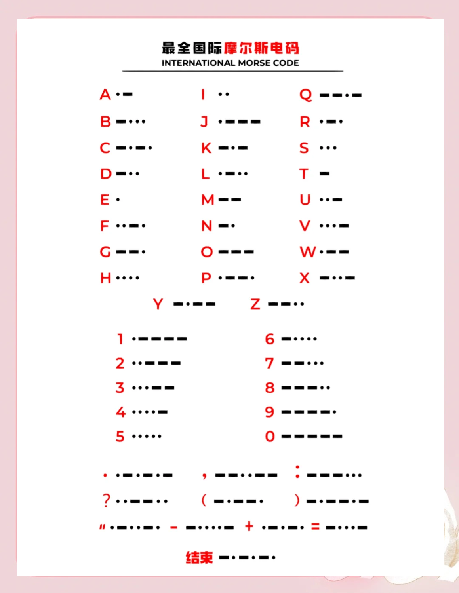

如何高效快速学会摩尔斯电码
摩尔斯电码作为业余无线电（HAM）的一项传统技能，不仅是一种通信方式，更是一种文化传承。很多刚入门的朋友都觉得学习摩尔斯电码很枯燥、很难，其实只要方法对路，掌握摩尔斯并不比学拼音更复杂。本文将分享一套高效快速的学习思路和技巧，帮助你轻松入门。
一、为什么要学摩尔斯电码？
1. 通信高效：在噪声大、信号弱的情况下，摩尔斯电码依旧能有效穿透。
2. 业余电台传统：CW（Continuous Wave）是业余无线电的经典模式。
3. 应急备用：即使设备简陋，也能用摩尔斯传递信息。
4. 锻炼思维：摩尔斯训练能提升注意力与反应速度。
二、学习摩尔斯的常见误区
- 死记硬背表格：直接背字母对应点划效率极低。
- 速度过慢：习惯逐个翻译，久而久之难以提升。
- 缺乏实战：只看书听录音，不练发报收报，容易半途而废。
三、高效学习的核心方法
1. Koch 方法（逐字递进）
从两个字母开始学，能准确听写后逐渐增加。推荐起始字母：K、M、R、S。
2. Farnsworth 方法（加长间隔）
字母保持快速节奏（如 20 WPM），字母间隔拉长。随着进步逐渐缩短间隔，向真实速度过渡。
3. 先听后发
听抄优先，先训练耳朵识别，再练发报。听到点划时直接说字母。
4. 短时高频训练
每天 10~15 分钟，坚持比一次猛练更有效。
四、实用练习工具推荐
- LCWO.net：全球最常用在线摩尔斯学习网站。
- Morse Mania（App）：手机随时练习。
- G4FON Koch Trainer：经典 PC 端软件。
- 练习方式：随机字母、常用单词、模拟呼号（如 “CQ CQ DE BA8AKA”）、结伴练习。
五、从入门到精通的阶段
| 阶段 | 目标 | 方法 | 时间周期 |
|---|---|---|---|
| 入门 | 10 个字母 | Koch 法，听抄 | 1~2 周 |
| 提升 | 全部字母与数字 | 加入 Farnsworth 间隔 | 1~2 月 |
| 应用 | 熟练呼号缩写 | 模拟通联练习 | 3~6 月 |
| 精通 | 20 WPM 流畅 QSO | 实战 CW | 6~12 月 |
六、保持动力的小技巧
- 设定阶段目标（如“1 个月内能收报呼号”）。
- 找同好一起练习，互相督促。
- 多参与业余电台比赛，收获成就感。
- 把摩尔斯当作“第二语言”，在生活中做小测试增加趣味性。
七、摩尔斯电码速查表
下图包含了字母 A-Z、数字 0-9 以及常用符号，适合收藏或打印使用：
八、结语
学习摩尔斯电码并不只是掌握一门技能，更是融入 HAM 文化的一种方式。记住：不要死记硬背，不要贪快，要用科学方法反复听、练、用。只要坚持，你一定能在电波的世界里，用“滴答声”与全球的朋友顺畅交流。
CQ CQ CQ DE BA8AKA K
（呼叫结束，期待你也能早日熟练 CW！）